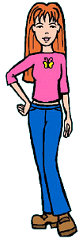

Full Name: Quinn Morgendorffer
Current Age: 16½
Current Vocation: Senior at Lawndale High
Season One Age: 14½
Season One Vocation: Freshman at Lawndale High
Parents: Jake and Helen Morgendorffer
Siblings: Daria
First Appearance: Esteemsters
Quinn is the person you would get if you took a girl like Daria, shaved off a dozen or so I.Q. points, and gave her an obsession with fashion, boys, and popularity. She wraps up in one stuck-up, too-cute, self-absorbed package everything that Daria holds in disdain. She dates as many boys as she can, but, paradoxically, she seems to have a real fear of intimacy; she won't even let a boy slow-dance with her. That doesn't seem to affect her ability to get dates, however, as almost every guy she meets tends to fall all over her (with one notable exception).
There are moments in which Quinn reveals that she's not quite the airhead she appears to be, but for the most part, her intelligence is geared mainly towards what is most important to her: namely, being cute and popular. However, by the start of her junior year, this began to change; after a summer of tutoring, she discovered that she actually has a functioning brain under all that makeup and bouncy hair, and has begun to use it... within limits, of course.
For years, Quinn was terminally embarrassed at having Daria -- a "brain" (ewww!) -- for a sister. She would tell everyone that she and Daria were cousins, distant relatives... anything but sisters. However, her tolerance and respect for Daria grew steadily over the years, particularly after her summer tutoring. This finally culminated in her public admission to her friends (in "Lucky Strike" (#506)) of her true relationship to Daria. It was the most significant moment of personal growth Quinn had ever shown, but the ironic thing is, her friends had known all along that they were sisters; they were just being polite about it!
It's a safe bet that if Quinn ever discovered her true potential, her lethal combination of looks and brains would make her a very formidable person indeed!
Status at end of series:
Advanced to the senior class at Lawndale High. Took an extended sabbatical from her duties in the Fashion Club, which became a permanent one when the Fashion Club dissolved. Still friends with Sandi, Stacy, and Tiffany. Gained a new friend, Lindy, while working at the Governor's Park restaurant, though Lindy's apparent alcoholism (which Quinn has been trying to get her to overcome) could prove to be a strain on their friendship.
Daria on Quinn:
How lucky can I get -- to have such an attractive and popular sister? Pass the drain cleaner, please.
|
|
- During the first three seasons, Quinn's shirt was a pink baby tee with short sleeves, a yellow smiley face on the chest, and plenty of midriff showing. Starting with season four, she wore the outfit shown above.
|